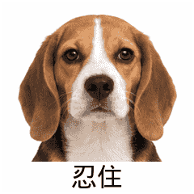
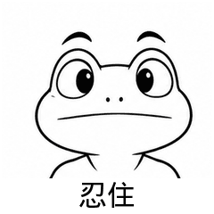
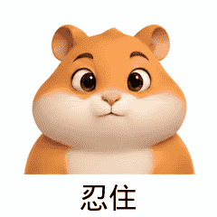
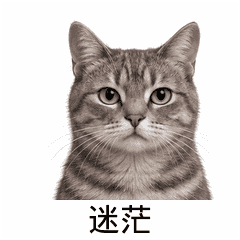
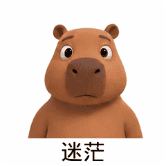
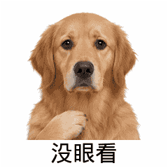
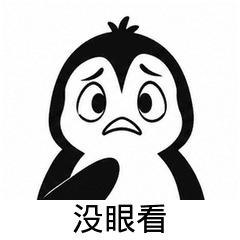
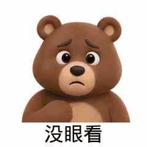

忍住 · beagle-restrain

机器通过 · 113255 字节 · 视觉与动态待审
原始GIF抿嘴眯眼可能更像满足微笑；需无字幕语义复核，首尾耳朵/毛发有差异。
12项源稿，11张GIF机器通过，迷茫鸭1项待返工。忍住4张、迷茫3张、没眼看4张；迷茫尚不足4张。
形象与实际动态均待审，未实际动态播放；未获用户语义/审美认可，禁止发布，未入APK/API。
GIF 240×240，20帧，4000ms，循环；每张低于250KB。第8格峰值900ms。

机器通过 · 113255 字节 · 视觉与动态待审
原始GIF抿嘴眯眼可能更像满足微笑；需无字幕语义复核，首尾耳朵/毛发有差异。

机器通过 · 128580 字节 · 视觉与动态待审
原始GIF鼓腮压嘴较明确，但可能被读成憋气；首尾眉形与轮廓略变。

机器通过 · 79001 字节 · 视觉与动态待审
原始GIFv1/v2循环失败，v3行对齐后通过；仍需播放检查颊部变化，可能被读成憋气。
机器通过 · 69792 字节 · 视觉与动态待审
原始GIF脸颊绷紧、闭眼克制较明确；可能有憋气/用力歧义。

机器通过 · 124580 字节 · 视觉与动态待审
原始GIF左右寻找后眉心上扬，可能被读成担心/惊讶；猫耳细节需循环复核。
待返工 · 不输出GIF，不计入通过数
查看v4源稿三次修订后v4仍失败loopClosure：0.05579861111111111 > 0.03732638888888889；无成品GIF。v1造型联想风险，v3误变情绪拼盘且机器通过，不能用机器替代语义。

机器通过 · 83994 字节 · 视觉与动态待审
原始GIFv1/v2循环失败，v3行对齐后通过；忧虑表情可能不如迷茫明确。
机器通过 · 74672 字节 · 视觉与动态待审
原始GIF张嘴抬内眉可读为不知所措，也可能是惊讶；须实际播放。

机器通过 · 110689 字节 · 视觉与动态待审
原始GIF同侧爪遮眼路径可见，可能读成懊恼/头疼；爪形与毛发连续性待播放。

机器通过 · 107987 字节 · 视觉与动态待审
原始GIF同侧鳍遮眼，鳍在峰值明显变宽弯折；需播放审查是否像橡皮伸缩。

机器通过 · 80304 字节 · 视觉与动态待审
原始GIF同侧爪从胸前遮眼再退回，可能读成头疼；首尾轮廓需播放。
机器通过 · 106937 字节 · 视觉与动态待审
原始GIFv2抬高起始手部，最终手指和掌部可见；腕部仍接近裁切边缘，低头变化与遮脸手部细节待播放。
每组按上方角色顺序4行，每行帧0/5/10/13/19。第二组第2行留白：鸭失败，没有成品帧。
{kind=link}
{kind=link}
{kind=link}